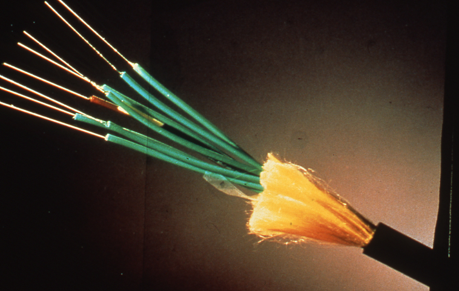
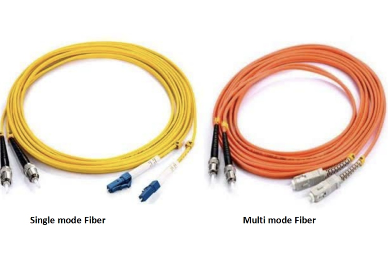

Fibre optic cable is a type of cable that uses optical fibers to transmit data as light signals. It is known for its high bandwidth, immunity to electromagnetic interference, and ability to carry signals over long distances.
There are two main types: single-mode fibers, which allow light to travel straight down the fiber with minimal loss, ideal for long-distance communication; and multi-mode fibers, which allow multiple light paths, suitable for shorter distances like in buildings.
Common applications include internet backbones, cable television, telephone systems, and local area networks. Advantages include high data rates (up to terabits per second), security (difficult to tap), and resistance to environmental factors. Disadvantages include higher cost and fragility compared to copper cables.

